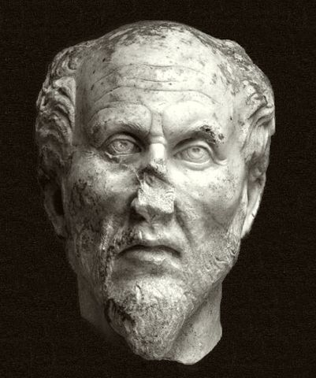

新柏拉图主义的奠基人，古代哲学最后一位"体系大师"。他把柏拉图的世界观重铸为"太一—理智—灵魂"的流溢结构，并主张灵魂可以通过哲学与德性"回归"太一。他的思想深深塑造了基督教神秘主义与整个西方形而上学。
普罗提诺的世界是一个"阶梯"：太一在上，万物流溢而下，灵魂最终再回归太一。理解这"流溢—回归"的双重运动，就能把握新柏拉图主义的全部骨架。以下六个概念构成其思想主干。
超出一切存在与思想的本原。不可言说、不可定义——"太一"是万物的源头与归宿。
太一如太阳般自行散发，产生理智、灵魂与万物——流溢不是"造"，而是"涌出"。
太一的第一产物：思想与存在的统一。在这里，思维主体与对象合一。
第三层本体：观照理智、生成世界。它既是"世界的灵魂"，也是"我"的实体。
物质是流溢最远端的"暗界"——它本身不是"实体"而是"匮乏"。灵魂坠入物质便陷入"恶"。
灵魂的"返乡"之路：通过德性、美学、哲学，逐级上升，最终在神秘的直观中重新与太一合一。
普罗提诺唯一的著作《九章集》（Enneads）由其弟子波菲利整理编订：54篇论文按主题分成六组，每组九篇（希腊语"九"=Ennea）。以下按六组展开。
《九章集》是难书，建议从第一组（伦理）与关于"太一"的短篇（V.1、VI.9）入手——这两处最接近"人生哲学"。
先把"太一—理智—灵魂"三层的"流溢—回归"图景装进脑子里，再去读各篇：所有细节都是这一结构的具体展开。
与柏拉图《理想国》（线段喻）、《会饮》（上升）对照；再看奥古斯丁如何吸收普罗提诺。普罗提诺的影响，在对照中最清楚。
本站是普罗提诺（新柏拉图主义创始人）的导读。核心概念页展开"太一、流溢、理智、灵魂、物质、回归"六大关键词；著作页按《九章集》六组逐组解读；生平页追溯从埃及到罗马的哲学生涯；名言页则收入他关于"回归"与"光"的经典表述。
普罗提诺是"哲学与神秘主义交界处"的思想家：他有极严密的形而上学论证，也有极强烈的"超验"经验。理解他，既要"哲学家式的逻辑"，也要"修行者式的敏感"——这两者在《九章集》里不可分离。